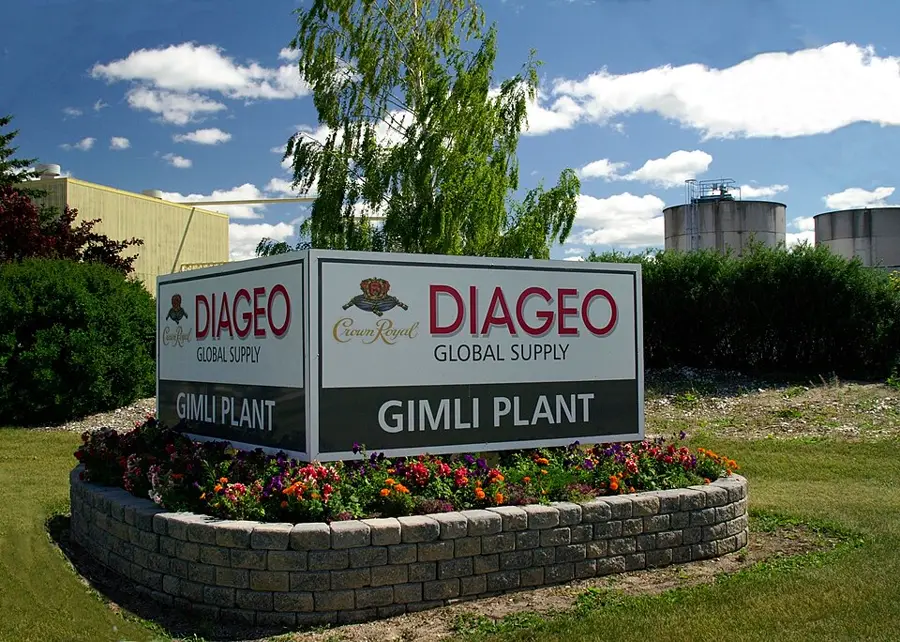

대표 로고대표 브랜드 마크
대표 로고대표 브랜드 마크디아지오 Diageo
디아지오(Diageo)는 영국 런던에 본사를 둔 다국적 주류 기업이다. Guinness, Johnnie Walker, Smirnoff 등의 브랜드를 보유하며 스카치위스키를 비롯한 증류주를 유통하는 주요 업체이다.
최종 업데이트
디아지오는 어떤 브랜드인가
디아지오는 영국 런던에 본사를 둔 다국적 주류 기업으로, 180개국에서 110개 사업장을 운영한다. Guinness, Johnnie Walker, Smirnoff 같은 브랜드를 앞세워 스카치위스키와 기타 증류주를 유통하는 주요 업체이다.
증류소들은 전체 스카치위스키의 40%를 생산하며, 이 증류소들이 만드는 위스키 브랜드는 24개가 넘는다. 런던증권거래소에 상장되어 FTSE 100 지수의 구성 종목이며, 뉴욕증권거래소에는 미국예탁증서 형태로 상장되어 있다.
1997년 Guinness plc와 Grand Metropolitan plc의 합병으로 출범한 뒤 비핵심 자산을 정리하며 주류 사업에 집중해 왔다.
디아지오는 어떻게 시작되고 성장했나
디아지오는 1997년 Guinness plc와 숙박·유통 복합기업 Grand Metropolitan plc가 합병하면서 만들어졌다. 합병은 Guinness의 Anthony Greener와 Philip Yea, Grand Metropolitan의 George Bull과 John McGrath 등 경영진이 추진했다.
주식은 1997년 12월 17일 런던증권거래소에서 거래를 시작했다. 사명은 브랜딩 컨설팅사 Wolff Olins가 1997년에 만들었으며, 라틴어 diēs(날)와 그리스어 어근 geo-(땅)에서 유래한다.
합병 이후에는 주류가 아닌 자산을 차례로 매각하며 음료 사업에 집중했다.
디아지오의 브랜드 아이덴티티는 무엇인가
스카치위스키 생산 비중이 크고 Guinness, Johnnie Walker, Smirnoff 같은 대형 브랜드를 한 회사에서 거느린 영국계 종합 주류 기업이다.
디아지오의 대표 제품과 서비스는 무엇인가
대표 브랜드는 Guinness, Johnnie Walker, Smirnoff이다. 스카치위스키 증류소들은 24개가 넘는 브랜드를 생산하며 전체 스카치위스키의 40%를 차지한다.
2001년 5월에는 프랑스 주류 기업 Pernod Ricard와 공동으로 캐나다 기업 Seagram을 인수했다. 이후 튀르키예의 Mey Icki, 브라질 카샤사 제조사 Ypióca, 인도 United Spirits의 과반 지분, 중국 바이주 제조사 Sichuan Shuijingfang Company를 차례로 인수하며 사업 영역을 넓혔다.
디아지오는 지금 어떤 상태인가
디아지오는 런던증권거래소에 상장된 공개기업이며 FTSE 100 지수의 구성 종목이다. 뉴욕증권거래소에서도 미국예탁증서 형태로 거래되고, 180개국 110개 사업장에서 운영된다.
2015년 10월에는 맥주와 와인 부문에서 Red Stripe 맥주 브랜드 등을 매각했다. 2011년 8월에는 해외 공무원에 대한 부적절한 지급 혐의로 제기된 미국 민사 규제 소송을 US$16 million 이상을 내고 합의했다.
디아지오 로고는 어떻게 변해왔나
대표 로고대표 브랜드 마크사진으로 보는 디아지오의 역사

자주 묻는 질문
디아지오는 어느 나라 브랜드인가요?
디아지오는 영국의 식음료 브랜드입니다.
디아지오는 언제 설립되었나요?
디아지오는 1997년 설립되었습니다.
디아지오의 브랜드 아이덴티티는 무엇인가요?
스카치위스키 생산 비중이 크고 Guinness, Johnnie Walker, Smirnoff 같은 대형 브랜드를 한 회사에서 거느린 영국계 종합 주류 기업이다.
디아지오의 대표 제품은 무엇인가요?
대표 브랜드는 Guinness, Johnnie Walker, Smirnoff이다.
디아지오는 현재 어떤 상태인가요?
디아지오는 런던증권거래소에 상장된 공개기업이며 FTSE 100 지수의 구성 종목이다.
디아지오의 본사는 어디에 있나요?
디아지오의 본사는 런던에 있습니다(위키데이터 기준).
디아지오의 공식 웹사이트는 어디인가요?
디아지오의 공식 웹사이트는 http://www.diageo.com 입니다.
출처와 검증
디아지오 관련 참고: 공식 웹사이트 · 위키데이터 Q161140 · 한국어 위키백과 · 영어 위키백과. 브랜드명은 한글과 원어를 함께 표기하되 데이터에 없는 표기는 만들지 않습니다. 기원 국가·설립연도는 검수된 정의문에서 확인된 값을 우선하고, 없을 때만 공식 웹사이트 URL이 일치하는 위키데이터 개체의 값을 씁니다. 탄생일의 월·일은 위키데이터, 위키백과 정보상자, 본문 가운데 같은 연월로 확인되는 값만 싣고, 출처끼리 다르면 싣지 않습니다. 웹 첫 보관은 인터넷 아카이브가 공식 사이트 첫 화면을 처음 보관한 날로, 사이트 개설일과 다를 수 있습니다. 위키데이터 값은 2026-11-07 기준입니다.